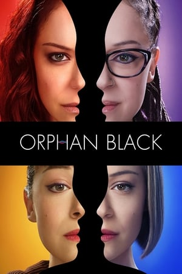
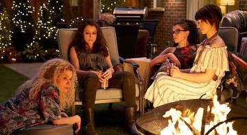
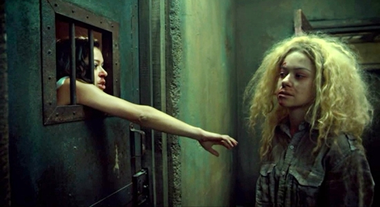

Orphan Black
Sinopse:
Depois de presenciar o suicídio de uma mulher (que é exatamente como ela) em uma estação de trem, Sarah Manning faz o que qualquer um faria: assume a identidade da suicida para tentar resolver os próprios problemas financeiros. Mas logo ela descobre que está no centro de um mistério que vai mudar sua vida, quando se vê cara a cara com mais três mulheres idênticas a ela. Todas são clones, e precisam salvar as próprias peles enquanto tentam descobrir quem são os responsáveis pelos experimentos genéticos.
Elenco:
Tatiana Maslany, Kristian Bruun, Ari Millen, Maria Doyle Kennedy, Jordan Gavaris, Kevin Hanchard, Josh Vokey
Trailer:
- 
- 